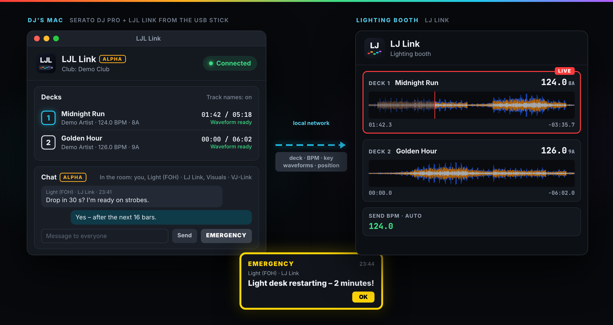

LJL Link · LJ LAN LinkYour Serato decks
in the lighting booth.
A small Mac app for DJs: it runs from the club's USB stick and shows LJ Link at the lighting desk what is on your decks – with waveform, BPM, key and running position. Nothing to install, nothing to change in your setup.

Features
Built for the DJ – and for the booth
Serato DJ Pro has no public interface that LJ Link could use for decks, waveforms and position. LJL Link follows along on your Mac and sends the lighting booth exactly what it needs, so lights and effects match drops and breaks.
⏏Runs from the USB stick
The club puts LJL Link on its stick. You plug it in and start the app – nothing is installed. At the end choose “Quit” (⌘Q) and unplug the stick.
▤Your decks in the booth
Which track is on which deck, with length, BPM and key. Load a new track and the booth sees it.
≋Three-band waveforms
Lows, mids and highs apart – as an overview of the whole track and as a detail waveform. Built on your Mac; the audio itself never leaves it.
▶Running position
LJL Link reads the time display in Serato's window, so the waveform in LJ Link runs along with your track. For this macOS asks for “Screen Recording”; without it everything works except the position.
◐You decide about names
At the start LJL Link asks whether track names may be sent – switch it any time. Without your OK, titles, artists and file names do not leave your Mac.
⊘Passive
LJL Link does not control Serato and never touches controllers or MIDI. It only reads Serato's log, the loaded track (for waveform, BPM and key) and the time display.
⇄Finds the booth
The file club.json next to the app holds the club's address and club key. If the booth computer has a new address, LJL Link finds LJ Link with Bonjour in the network; the key decides.
✉Suite chat (alpha)
One chat room with every suite program in the network – LJ Link, VJ-Link, LJL Link – without a server. With name and position. The EMERGENCY button opens a pop-up at the bottom right for everyone. Can be switched off, never saved and never logged. Tested on one Mac, not yet between two computers.
✓Simple for every DJ
A welcome screen explains everything before the first question. The menu bar icon shows whether all is well. “Report a problem” right from the app. English and German.
What is sent
What leaves your Mac – and what does not
LJL Link sends only within the local network: to LJ Link in the club and, while it is on, to the suite chat. It needs no internet, has no account and no telemetry.
| Data | To LJ Link |
|---|---|
| Name of the Mac (from System Settings), LJL Link version | yes – LJ Link shows with it whose decks these are |
| Deck number, length, BPM, key | yes |
| Waveforms (three bands) | yes |
| Running position | yes, if “Screen Recording” is allowed – only the time, no picture |
| Title and artist | only if you allow it |
| File names, folders, the audio itself | never |
| Chat messages | to every suite program in the network while the chat is on |
Get started
Live in three steps
- Stick from the clubThe lighting team puts LJL Link and the file club.json on a USB stick. The DJ's Mac has to be in the same network as LJ Link.
- StartPlug in the stick, start LJL Link. Allow “Local Network” and “Screen Recording” and answer the question about track names.
- PlayLoad tracks in Serato as usual. Your decks appear in LJ Link. At the end choose “Quit” (⌘Q) – closing the window is not enough, LJL Link keeps sending from the menu bar.
Guide in the LJ Link wiki (Serato) Use case: Serato on the DJ laptop
Download
Free for macOS
One app for Apple silicon and Intel (universal), macOS 14 or newer. The lighting booth needs LJ Link 1.7.11 or newer (with the input for LJL Link).
macOS · Apple silicon & Intel
Via the Link-Suite launcher · macOS 14 or newer · alpha
Launcher · Apple silicon Launcher · IntelFirst start
First start on the Mac
LJL Link is not notarized by Apple (yet). An app that macOS knows as downloaded is therefore blocked once on the first start. Only download LJL Link from GitHub or this page – or take it from the club's stick.
⌘If macOS warns
Message: “LJL Link” Not Opened – Apple could not verify “LJL Link” is free of malware.
- Start LJL Link once. At the warning click “Done” (not “Move to Trash”).
- Open System Settings → “Privacy & Security” → scroll all the way down.
- Next to “LJL Link was blocked …” click “Open Anyway” and confirm with your password or Touch ID.
- In the next window choose “Open” once more.
On macOS 14 this also works: right-click the app → “Open” → “Open”.
Once LJ Link prepares the stick (the function is still to come), the app carries no download flag and starts without this warning.
For experts: with Terminal
Run this command with the path to the app, then it starts without the warning. It switches off macOS's download check for this app – only use it for a copy from GitHub or this page:
xattr -dr com.apple.quarantine "LJL Link.app"
?Two questions from macOS
- “Local Network”: “Allow”. With it LJL Link finds LJ Link in the booth, and the chat works.
- “Screen Recording”: switch it on for LJL Link in System Settings. LJL Link uses it only to read the time display in Serato's window (details in the privacy policy); nothing is stored or sent except the time.
Without “Screen Recording” everything works, only without the running position. Missed it? System Settings → “Privacy & Security” → “Local Network” or “Screen Recording” (depending on the macOS version “Screen & System Audio Recording”).
Requirements
What you need
| What | State |
|---|---|
| Mac with macOS 14 or newer, Apple silicon or Intel | alpha; tested on one Apple silicon Mac with the current macOS, not yet on Intel or older macOS |
| Serato DJ Pro | alpha, tested locally, not yet in a club |
| LJ Link in the lighting booth, 1.7.11 or newer | alpha |
| Mac and booth in the same local network | required |
| “Prepare stick” in LJ Link | planned; until then club.json by hand |
| Windows, other DJ software | not supported |
The suite
LJL Link belongs to LJ Link
LJL Link is the sender, LJ Link the receiver in the booth. Together with VJ-Link they form a small suite for lights, visuals and DJs.
 LJ Link
LJ Link
Shows the lighting jockey every deck, waveform and cue live – from Pioneer, Denon and now, with LJL Link, from Serato too – and sends the BPM to grandMA, Daslight and more. Free for macOS and Windows.
See LJ Link → VJ-Link
VJ-Link
Live visuals, run by the light desk: visuals and effects on screens, LED walls and projectors. It takes tempo and track from LJ Link. Also in the suite chat.
See VJ-Link →Get involved
Want to help out?
LJL Link is an alpha and grows with its community. Especially wanted: DJs with Serato DJ Pro and clubs that try it in a real booth.
FAQ
Questions
Does LJL Link control Serato or my controller?
No. LJL Link is passive: it only reads Serato's log, the loaded track and the time display. It never touches Serato, controllers or MIDI.
Do I have to install anything?
No. LJL Link runs straight from the club's USB stick. macOS only asks about “Local Network” and “Screen Recording”.
Does the booth see my track names?
Only if you allow it. LJL Link asks at the start, and you can switch it any time. Without your OK, titles, artists and file names do not leave your Mac; the booth then only sees that titles are hidden.
Why does LJL Link want “Screen Recording”?
Serato DJ Pro has no public interface for the play position that LJ Link could use. So LJL Link reads the time display in Serato's window (details in the privacy policy). Nothing is stored or sent except the time. Without the permission everything works, only without the running position.
My Mac says “LJL Link” Not Opened – what does that mean?
LJL Link is ad-hoc signed, but not yet notarized by Apple, so macOS cannot verify the developer. Only download LJL Link from GitHub (github.com/skyplayser/LJL-Link) or this page. How to open it then is explained above under “First start”.
Does LJL Link need internet?
No. LJL Link only talks to LJ Link and the suite chat in the local network. No account, no cloud, no telemetry.
What is the suite chat?
A chat room for every suite program in the same network – LJ Link, VJ-Link and LJL Link – without a server. You enter your name and position. The EMERGENCY button shows your message to everyone as a pop-up at the bottom right. The chat can be switched off; messages are never saved and never logged. It is an alpha. EMERGENCY is a heads-up pop-up for the team, not an alarm or safety system. It is an alpha, can fail or arrive late, and anyone in the same network can trigger it. It does not replace announcements, radios or the event's safety plan.
Is there LJL Link for Windows or other DJ software?
No. LJL Link is a Mac app for Serato DJ Pro.
Where is the full guide?
In the LJ Link wiki, on the Serato page. LJL Link has no wiki of its own.
Does it cost anything?
No. It is free and open source under the Eclipse Public License 2.0.